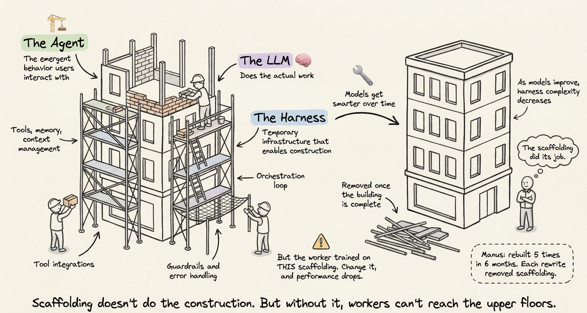
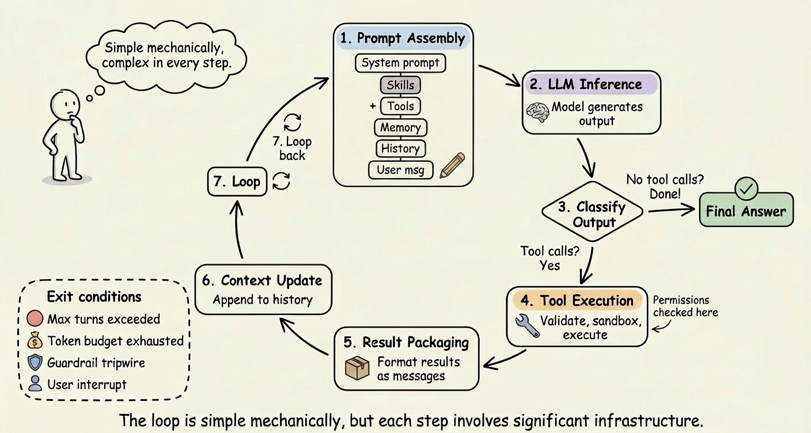

Agenten & Harnesses
Wie aus einem Sprachmodell ein handelnder Assistent wird – und warum das Drumherum oft wichtiger ist als das Modell selbst.
Workshop & Mini-Hackathon · sdw Alumni
Ein LLM ist eine Text-Maschine
tippt immer nur das wahrscheinlichste nächste Wort
✗ keine Dateien · ✗ kein Internet · ✗ keine Aktionen · ✗ Wissen von gestern
Sie kann euch erklären, wie man ein Sommerfest plant – aber keinen Raum buchen, keine Mail schicken, nichts nachschlagen.
Der Harness baut der Maschine vier Features an
① Tools – ausführen & nachschauen · ② Loop – dranbleiben · ③ Subagenten – parallel · ④ Skills – Playbooks → zusammen: ein Agent
Drei Dinge, die das Modell allein nie kann
🌦 „Regnet es am 12. Juli?“
weiß es nicht – Wissen von gestern
👥 „Wer ist bei uns Mitglied?“
kennt es nicht – eure Daten sind intern
💶 „Beantrag 480 € beim Verein!“
kann es nicht – nur Text, keine Aktionen
aktuelles Wissen · eure Daten · echte Aktionen
Das Modell schreibt nur den Aufruf – der Harness führt ihn aus.
Der Agent in Aktion – Schritt für Schritt
→ drücken für den nächsten Schritt · groß geträumt, abgelehnt, selbst korrigiert – am Ende bewilligt
Ein Kopf kann nicht alles auf einmal
Der Projektantrag fürs Seminar: Raum finden und Budget kalkulieren und Programm schreiben.
Wer alles gleichzeitig im Kopf behält, verliert den Überblick – wie an einem überfüllten Schreibtisch.
Der Haken am eigenen Kopf: Jeder Subagent startet bei null – er weiß nur, was in seinem Auftrag steht, und zurück kommt nur seine Zusammenfassung. Unklarer Auftrag → unbrauchbares Ergebnis.
Aufteilen statt überladen – mit klaren Aufträgen.
Nicht jedes Mal alles neu erklären
Gleiche Aufgabe, neuer Tag: Du erklärst wieder von vorn, wie ein sdw-Antrag aussehen muss – Aufbau, Budget-Regeln, Tonfall.
Und trotzdem kommt jedes Mal etwas anderes heraus.
mit diesem Playbook wäre die Elphi gar nicht erst im Antrag gelandet
Einmal erklären, immer wieder verlässlich nutzen.
Das Gerüst mauert keine Wand – aber ohne geht’s nicht hoch

Quelle: dailydoseofds.com · „The Anatomy of an Agent Harness“
Vorn liegt heute: Anthropic mit Claude
🥇 Die Spitze
Claude (Modell) + Claude Code (Harness) – beides aus einer Hand von Anthropic. Damit baut ihr heute.
→ stärkstes Gespann aus Modell + Harness
🥈 Die Verfolger
Codex (OpenAI), Gemini CLI (Google), Cursor – gleiche Bauart, eigene Stärken.
→ Abstand: Monate, nicht Jahre
🌍 Open Source
Harnesses wie pi & OpenCode, offene Modelle wie Llama, DeepSeek, Qwen – frei kombinierbar, selbst hostbar.
→ Modell und Harness sind austauschbar
Das Prinzip ist überall gleich – wer eins versteht, versteht alle.
Baut das Portal, das Engagement findet 🚀
Tausende wollen helfen – und wissen nicht, wo. Euer Portal ändert das. Heute.
🔍 Entdecken
Echte Initiativen finden & vorstellen – recherchiert von euren Agenten.
🗺️ Filtern
Nach Thema & Ort – vom Mentoring bis zur Suppenküche.
🙌 Mitmachen
Ein Klick bis zum Engagement – zeigt, wie man andockt.
Alle Teams, dieselbe Aufgabe – möge das beste Portal gewinnen 🏆
Team-Setup (5 Min) → bauen → 2-Minuten-Pitch
Vier Skills haben wir schon vorbereitet
hackathon-prototype
Baut euch in Minuten ein fertiges App-Gerüst: Bedienoberfläche + Datenablage, startklar.
→ warum: keine Zeit mit technischem Setup verlieren
sdw-frontend
Verpasst jedem Projekt automatisch den sdw-Alumni-Look: Farben, Logo, Tonalität.
→ warum: schick aussehen ohne Design-Diskussion
stock-image
Findet echte Fotos für eure Seite – statt grauer Platzhalter-Boxen.
→ warum: sieht sofort nach echtem Produkt aus
ngrok-share
Macht euer Projekt per Link teilbar – auch auf dem Handy von allen im Raum.
→ warum: perfekt für den Pitch am Ende
Sagt dem Agenten was ihr wollt – die Playbooks kennt er schon.
Mechanisch simpel – Maschinerie in jedem Schritt

Quelle: dailydoseofds.com · „The Anatomy of an Agent Harness“